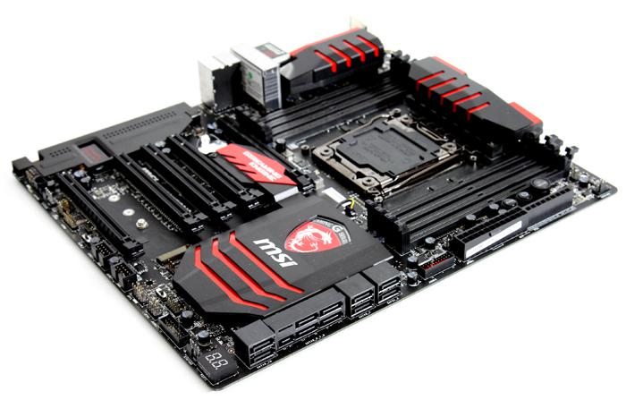

La placa base es la tarjeta de circuitos impresos que sirve como conexión entre el microprocesador, la RAM del sistema, y resto de elementos de hardware. Es un elemento tan o mas importante que el microprocesador, ya que de el dependera los elementos que podremos conectar y limitara el PC a un Hardware. Sus caracteristicas principales son muchas desde el socket del microprocesador o de la ram, las velocidades maximas de sus buses o su conectores
|
 MSI X99S Gaming 9 ACK |
CaracterísticasMemoria DDR4: 2133*/2200*/2400*/2600*/2666*/2750*/3000*/3110*/3333*(*OC)MHz SATA Express: 1 CPU (Soporte máximo): i7 Puerto M.2: 1 FSB / Bus Hyper Transport: 100 / 125 / 167MHz Chipset: Intel® X99 Express Canal de Memoria: Quad Ranuras DIMM: 8 Memoria Máxima (GB): 128 PCI-Ex16: 5 PCI-E Gen: Gen3 SATAIII: 10* (*2x SATA Express) Puertos USB 3.0 (Frontales): 4 Puertos USB 2.0 (Frontales): 4 RAID: 0/1/5/10 LAN: 10/100/1000*1 TPM: 1 Puertos USB 3.0 (Traseros): 8 Puertos USB 2.0 (Traseros): 2 Puertos de Audio (Traseros): 5+ SPDIF óptico DirectX: DX11 SLI 4 vías: Sí Formato: EATX SLI: Sí SLI de 3 vías: Sí CrossFire: Sí |
| Atras o Volver |